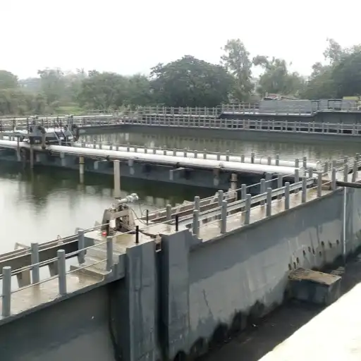
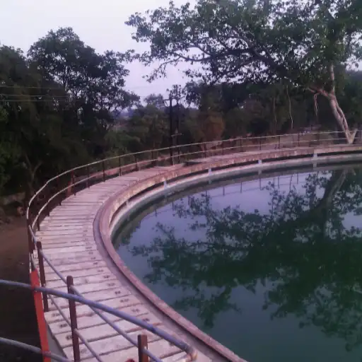
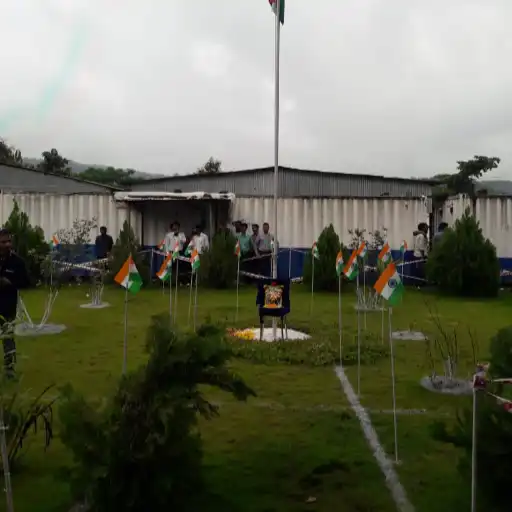

Oops! Youve landed on the wrong page. This
section isn’t accessible, and it looks like the link you followed is invalid. Please go back or provide
a valid link to continue.
15.5 MLD STP Panvel - Advanced Water Treatment Facility
Project Overview
Our state-of-the-art 15.5 MLD Sewage Treatment Plant in Panvel represents a milestone in
sustainable water management. Designed with cutting-edge technology, this facility processes
millions of liters daily, ensuring clean water flows back into the ecosystem.
The plant incorporates advanced treatment processes including primary sedimentation,
biological treatment, and tertiary filtration systems. This multi-stage approach ensures maximum
pollutant removal while maintaining operational efficiency.
Environmental Impact
This facility serves as a cornerstone for environmental protection in the Panvel region.
By treating wastewater to prescribed standards, we're contributing to cleaner rivers, improved
public health, and sustainable development practices.
The plant's design incorporates energy-efficient systems and automated controls, reducing
operational costs while ensuring consistent performance. It represents our commitment to protecting
environmental integrity for generations to come.
Technical Excellence
The facility features state-of-the-art equipment including automated screening
systems, aeration tanks, and advanced sludge treatment units. Every component has been carefully
selected for durability and performance in tropical conditions.
Adivli Kiravli ESR - Reliable Water Storage Solution
Strategic Infrastructure
The Adivli Kiravli Elevated Service Reservoir stands as a testament to modern water
infrastructure excellence. Engineered to meet the growing demands of the community, this strategic
water storage facility ensures uninterrupted supply while maintaining optimal water pressure and
quality standards.
Built with reinforced concrete construction and advanced materials, the reservoir is
designed to withstand seismic activities and environmental stresses. The elevated design ensures
gravitational flow, reducing energy costs for water distribution.
Community Benefits
This reservoir serves thousands of families in the Adivli Kiravli region, providing
consistent water supply for domestic, commercial, and emergency uses. The facility includes backup
systems and redundancy measures to ensure 24/7 availability.
Advanced monitoring systems track water quality and flow rates in real-time, ensuring
that residents receive clean, safe water that meets all regulatory standards. The project supports
local development and improves quality of life significantly.
Engineering Innovation
The reservoir incorporates modern engineering principles including optimal height
calculations, structural stability analysis, and efficient distribution network integration.
Every aspect has been designed for maximum reliability and minimum maintenance requirements.
Bhingari ESR - Community-Centered Water Infrastructure
Community Focus
The Bhingari Elevated Service Reservoir represents our commitment to delivering
world-class water infrastructure to every community. This carefully planned facility ensures
consistent water distribution, supporting local development and improving quality of life for
residents across the Bhingari region.
The project was developed with extensive community consultation, ensuring that the
facility meets current needs while providing capacity for future growth. Local employment
opportunities were created during construction, benefiting the community economically.
Reliable Access
Through reliable, safe water access, this reservoir enables better health outcomes,
supports local businesses, and provides the foundation for sustainable community development. The
facility operates with minimal environmental impact while maximizing service delivery.
Advanced filtration and treatment capabilities ensure that water quality consistently
exceeds regulatory requirements. The reservoir includes emergency backup systems and multiple
distribution zones for optimal service coverage.
Sustainable Design
The facility incorporates sustainable design principles including rainwater
harvesting integration, energy-efficient pumping systems, and materials selected for longevity
and environmental compatibility.
Ghot ESR - Strategic Water Distribution Hub
Strategic Positioning
Our Ghot Elevated Service Reservoir exemplifies precision engineering in water
distribution systems. Strategically positioned to serve the community's growing needs, this
infrastructure project delivers consistent water pressure and quality, fostering economic growth
throughout the Ghot area.
The location was selected based on comprehensive hydraulic analysis, ensuring optimal
coverage and pressure distribution across all service areas. The facility serves as a central hub
connecting multiple distribution networks.
Economic Impact
By enhancing the daily lives of residents and supporting local businesses with reliable
water infrastructure, this project contributes significantly to regional economic development. The
facility enables new residential and commercial developments in previously underserved areas.
Industrial users benefit from consistent supply schedules and quality assurance, enabling
better production planning and reduced operational risks. The infrastructure supports the area's
transition to higher-value economic activities.
Advanced Systems
The reservoir features automated control systems, remote monitoring capabilities, and
predictive maintenance protocols. These technologies ensure optimal performance while minimizing
operational costs and service interruptions.
Jui ESR - Excellence in Water Storage Engineering
Engineering Excellence
The Jui Elevated Service Reservoir showcases our dedication to creating sustainable water
infrastructure that serves communities for decades. Built with advanced materials and proven
engineering principles, this facility ensures reliable water distribution while supporting the
region's development aspirations.
Advanced structural analysis and seismic design considerations ensure the facility can
withstand natural disasters while maintaining service continuity. The reservoir incorporates
redundant systems for critical components.
Public Health Impact
This infrastructure improvement delivers significant public health benefits by ensuring
consistent access to clean, treated water. The facility includes advanced disinfection systems and
quality monitoring equipment to maintain the highest health standards.
Regular water quality testing and automated treatment adjustments ensure that distributed
water consistently meets or exceeds all regulatory standards. The system includes multiple barriers
to contamination and comprehensive quality assurance protocols.
Future-Ready Infrastructure
The design incorporates provisions for future expansion and technology upgrades,
ensuring the facility can adapt to changing needs and advancing water treatment technologies
over its operational lifetime.
Kalamboli ESR - Modern Water Infrastructure Landmark
Urban Development Support
The Kalamboli Elevated Service Reservoir stands as a cornerstone of modern urban water
management. Designed to accommodate rapid population growth, this state-of-the-art facility ensures
consistent water availability while meeting stringent quality standards.
The facility was designed with future urban expansion in mind, incorporating scalable
systems and distribution networks that can accommodate projected population growth over the next 20
years.
Residential & Commercial Hub
Contributing to Kalamboli's emergence as a thriving residential and commercial hub, this
infrastructure provides the foundation for sustainable development. The facility supports mixed-use
developments and ensures adequate supply for all user categories.
Strategic partnerships with local developers and municipal authorities ensure coordinated
development that maximizes the infrastructure investment while maintaining service quality for all
users.
Smart Technology Integration
The facility incorporates smart water management technologies including IoT sensors,
automated controls, and data analytics platforms that optimize performance and enable predictive
maintenance.
Kalundre ESR - Innovative Water Distribution Center
Advanced Technology
Our Kalundre Elevated Service Reservoir represents the perfect blend of engineering
excellence and community service. This thoughtfully designed water storage facility ensures optimal
distribution across the region, supporting local businesses, schools, and homes.
The facility features cutting-edge automation systems that monitor and adjust water flow
in real-time, ensuring consistent pressure and quality throughout the distribution network.
Community Connection
With reliable access to clean, safe water every day of the year, the facility connects
communities through shared infrastructure that supports collective prosperity and development goals.
Local stakeholder engagement throughout the project lifecycle ensured that community
needs and preferences were incorporated into the final design and operational protocols.
Operational Excellence
Comprehensive operational protocols and maintenance schedules ensure consistent
performance and longevity, maximizing the infrastructure investment for the community it serves.
Ludhiana-Ladhowal Highway Enhancement
Strategic Connectivity
The Laddowal Bypass project in Ludhiana, Punjab, spans 17.041 km, enhancing connectivity
between NH-95 and NH-1 via the Laddowal Seed Farm. Developed under the Hybrid Annuity Model, it
improves traffic flow and infrastructure.
This critical transportation link reduces travel time between major national highways
while providing improved access to agricultural and industrial areas in the region.
Economic Development
The enhanced connectivity supports agricultural logistics, industrial development, and
regional commerce. Improved road infrastructure attracts investment and facilitates the movement of
goods and people.
Local communities benefit from improved access to markets, healthcare, and educational
facilities, contributing to overall regional development and quality of life improvements.
Modern Infrastructure
The project incorporates modern highway design standards including improved drainage,
safety features, and sustainable construction practices that ensure long-term durability and
performance.
Trichy-Madurai Highway Maintenance Excellence
Operation & Maintenance
The operation and maintenance of the Trichy Bypass to Tovaramkurchi-Madurai section of
NH-45B focus on enhancing road quality, safety, and traffic efficiency. Managed under the OMT
(Operate, Maintain, Transfer) model.
This comprehensive maintenance program ensures consistent road conditions, minimizes
service disruptions, and extends the infrastructure lifespan through proactive maintenance
strategies.
Safety & Efficiency
The project ensures seamless travel and long-term infrastructure sustainability through
systematic maintenance, emergency response capabilities, and continuous performance monitoring.
Advanced materials and maintenance techniques are employed to maximize durability while
minimizing environmental impact and service interruptions to highway users.
Quality Assurance
Rigorous quality control measures and performance monitoring ensure that the highway
consistently meets safety and performance standards throughout the operational period.
Eagle's Pride Commercial Complex, Kolhapur
Modern Business Hub
Eagle's Pride in Kolhapur stands as a benchmark in commercial development, blending
strategic location with functional design. Our expertise ensured a seamless execution, offering
scalable business spaces that support local enterprise.
The complex incorporates modern amenities, flexible floor plans, and advanced building
systems that cater to diverse business needs from startups to established enterprises.
Economic Contribution
Contributing to Kolhapur's evolving urban economy, the facility provides employment
opportunities, supports local businesses, and attracts investment to the region.
Strategic retail and office spaces are designed to maximize foot traffic and business
interaction, creating a vibrant commercial ecosystem that benefits tenants and the broader
community.
Sustainable Design
The building incorporates energy-efficient systems, sustainable materials, and modern
infrastructure that reduces operational costs while providing a premium business environment.
UKNI Deep OCM Overburden Removal, Wani Area
Large-Scale Mining Operation
Western Coalfields Ltd. undertook a high-value ₹824.84 Cr project to remove overburden in
the UKNI Deep OCM. The work boosts mining productivity and safety while supporting Maharashtra's
energy and industrial needs.
Advanced mining equipment and techniques ensure efficient overburden removal while
maintaining environmental compliance and worker safety standards.
Energy Security
Through improved coal excavation efficiency, this project contributes to India's energy
security goals while supporting regional industrial development and employment generation.
Environmental restoration and rehabilitation measures are integrated into the project
lifecycle, ensuring sustainable mining practices and ecological protection.
Safety Excellence
Comprehensive safety protocols, continuous monitoring systems, and advanced equipment
ensure worker safety while maintaining operational efficiency in challenging mining
environments.
Mumbai Metro Line 4 - SEEPZ-Powai Corridor
Urban Mobility Revolution
The ₹372 Cr project by DMRC includes five elevated stations to improve last-mile
connectivity in Mumbai's suburban zones. It advances multimodal integration, reduces traffic
congestion, and supports eco-friendly transit.
State-of-the-art metro stations incorporate accessibility features, modern amenities, and
integration with existing transportation networks for seamless passenger experience.
Environmental Benefits
Near SEEPZ, Powai Lake, and surrounding neighborhoods, the metro system provides
sustainable transportation alternatives that reduce vehicle emissions and traffic congestion.
Energy-efficient systems, regenerative braking, and sustainable construction practices
minimize the environmental footprint while maximizing transportation benefits.
Modern Technology
Advanced signaling systems, automated train operations, and passenger information
systems ensure safe, reliable, and efficient metro services for millions of daily commuters.
Kamothe ESR - Premier Water Storage Facility
Community Service Vision
The Kamothe Elevated Service Reservoir embodies our vision of creating water
infrastructure that truly serves people. Engineered with precision and built to last, this facility
provides uninterrupted water supply to support the vibrant Kamothe community's residential,
commercial, and educational needs.
Comprehensive community planning ensures that the facility serves current populations
while providing capacity for future growth and development in this rapidly expanding area.
Unwavering Reliability
With unwavering reliability, the facility incorporates redundant systems, backup power
supplies, and automated monitoring to ensure continuous service even during emergencies or
maintenance periods.
Advanced water treatment and quality control systems guarantee that residents receive
clean, safe water that consistently meets or exceeds all regulatory standards for public health
protection.
Engineering Precision
Every aspect of the facility reflects engineering precision, from structural design
to hydraulic calculations, ensuring optimal performance and maximum service life.
Kharghar ESR - Comprehensive Water Management Solution
Modern Infrastructure Leadership
The Kharghar Elevated Service Reservoir stands at the forefront of modern water
infrastructure development. Serving one of the region's most dynamic communities, this expertly
engineered facility ensures consistent water flow and pressure.
The facility incorporates smart grid technologies and IoT sensors that provide real-time
monitoring and optimization of water distribution across the entire service area.
Supporting Growth
Supporting Kharghar's continued growth as a premier residential and business destination,
the infrastructure provides the foundation for sustainable development while maintaining service
excellence.
Strategic location and advanced distribution systems ensure optimal coverage for
mixed-use developments, educational institutions, and commercial facilities throughout the region.
Dynamic Community Service
Designed to serve one of the region's most dynamic communities, the facility adapts
to changing demand patterns while maintaining consistent service quality.
State Highway Shegaon, Maharashtra
Regional Mobility Enhancement
Our development of the State Highway in Shegaon demonstrates technical precision and deep
regional insight. This project enhances road safety, reduces travel time, and fosters economic
connectivity—supporting Maharashtra's vision for robust, future-ready transportation infrastructure.
Advanced pavement design and drainage systems ensure long-term durability while
minimizing maintenance requirements and lifecycle costs.
Economic Development
The improved transportation infrastructure supports emerging towns by facilitating better
connectivity to major markets, industrial centers, and urban areas, promoting balanced regional
development.
Local businesses benefit from reduced transportation costs and improved accessibility,
while the enhanced infrastructure attracts new investment and development opportunities to the
region.
Safety Innovation
Modern safety features including improved signage, lighting, and road geometry
enhancements significantly reduce accident risks while improving overall travel experience.
Paithan Road, Sambhajinagar
Urban Traffic Solutions
Paithan Road is a vital infrastructure solution that redirects heavy traffic from the
city center. Engineered with modern alignment and safety features, the project enables smooth
transit, eases congestion, and exemplifies Eagle Infra's trusted urban highway design capabilities.
Strategic route planning minimizes environmental impact while maximizing traffic flow
efficiency, reducing urban air pollution and noise levels.
Regional Flow Optimization
The project streamlines regional traffic flow by providing dedicated lanes for through
traffic, reducing congestion in residential and commercial areas while improving overall
transportation efficiency.
Advanced traffic management systems and intelligent transportation features ensure
optimal traffic flow during peak hours while maintaining safety standards.
Modern Engineering
Contemporary engineering solutions including improved drainage, lighting, and
pavement technology ensure long-term performance and user safety.
BOT Toll Plaza - Jam to Warora, Chandrapur
Build-Operate-Transfer Excellence
The toll plaza developed under the BOT model between Jam and Warora reflects our
engineering efficiency and financial expertise. Strategically executed to streamline traffic flow,
it supports economic activity and ensures long-term, self-sustained infrastructure.
Advanced toll collection systems including electronic toll collection and automated lane
management ensure efficient traffic processing and revenue optimization.
Regional Connectivity
The facility enables seamless regional connectivity in Chandrapur district while
generating revenue for ongoing infrastructure maintenance and development projects.
Strategic location and design optimize traffic flow while providing essential services
including fuel, food, and emergency assistance for highway travelers.
Financial Sustainability
The BOT model ensures financial sustainability while delivering high-quality
infrastructure that serves the public interest and supports regional economic development.
Chittampatti Toll Plaza, Tamil Nadu
Smart Toll Management
The Chittampatti Toll Plaza showcases our proficiency in modern toll infrastructure,
designed to reduce congestion and enhance safety on key Tamil Nadu routes. Built to national
standards, it ensures efficient traffic regulation and long-term revenue sustainability.
State-of-the-art electronic toll collection systems reduce waiting times while providing
detailed traffic analytics for ongoing optimization and planning.
Regional Development Support
The facility supports regional development through improved transportation efficiency and
serves as a model for sustainable infrastructure financing through user fees.
Comprehensive safety features including emergency response capabilities and traveler
services ensure positive user experience while maintaining high safety standards.
Technology Integration
Advanced technology systems provide seamless toll collection, traffic monitoring, and
revenue management while ensuring transparency and accountability.
Sewage Treatment Plant, Bhiwandi, Mumbai
Environmental Sustainability
Our Sewage Treatment Plant project in Bhiwandi, Mumbai, highlights our commitment to
environmental sustainability. Designed for high-capacity waste processing and compliance with urban
sanitation standards, it supports cleaner ecosystems and healthier communities.
Advanced treatment processes including biological treatment, tertiary filtration, and
disinfection ensure that treated effluent meets stringent environmental discharge standards.
Community Health Impact
Through efficient wastewater management, the facility significantly improves public
health outcomes by preventing waterborne diseases and protecting groundwater resources from
contamination.
The facility includes odor control systems and noise mitigation measures to ensure
compatibility with surrounding residential and commercial developments.
Advanced Processing
Multi-stage treatment processes ensure maximum pollutant removal while recovering
resources including biogas and treated water for beneficial reuse applications.
Ambernath Underground Sewerage Network Extension
Urban Sanitation Enhancement
This ₹141.99 crore project marks a major leap in Ambernath's urban development. By
extending its underground sewerage network, the city aims to enhance waste management, minimize
health risks, and support a more sustainable future.
Advanced sewerage systems including gravity mains, pumping stations, and treatment
facilities ensure comprehensive wastewater collection and treatment across the expanded service
area.
Future-Ready Infrastructure
It's a vital step toward modern infrastructure that keeps pace with growing civic needs,
providing the foundation for sustainable urban development and improved quality of life.
The system incorporates smart monitoring technologies and preventive maintenance
capabilities to ensure long-term reliability and optimal performance.

Environmental Protection
The expanded network protects local water bodies and groundwater resources from
contamination while supporting public health and environmental sustainability goals.
Elevated Water Reservoir - Badlapur
Consistent Urban Supply
This overhead water tank, constructed in Badlapur, ensures steady water distribution
across elevated and densely populated areas. Built to withstand daily load cycles and climate
exposure, the structure plays a key role in maintaining pressure balance.
Strategic elevation and capacity sizing ensure optimal hydraulic performance across the
entire distribution network, eliminating low-pressure zones and service interruptions.
Smart Scalable Infrastructure
Improving supply reliability and preparing the city for future urban expansion, it's a
testament to smart, scalable infrastructure supporting real community needs.
Advanced materials and construction techniques ensure structural integrity and longevity
while minimizing maintenance requirements and operational costs.

Reliable Distribution
The facility ensures reliable water distribution to residential, commercial, and
institutional users while providing emergency storage capacity for contingency situations.
LTT Station Building Complex, Kurla
Transportation Hub Development
With a strong commitment to excellence in infrastructure, we successfully contributed to
the development surrounding LTT Station through the Kurla Building Complex project. Designed with
safety, accessibility, and urban efficiency in mind.
The complex integrates seamlessly with railway infrastructure while providing essential
commercial and service facilities for passengers and the local community.
National Connectivity
This initiative reflects our expertise in delivering high-impact civil infrastructure
aligned with national connectivity goals, supporting Mumbai's role as a major transportation hub.
Multi-modal transportation integration ensures seamless connectivity between rail, road,
and local transit systems, enhancing overall transportation efficiency.
Urban Integration
The development supports urban integration by providing essential services and
facilities that enhance the overall functionality of the transportation corridor.
Raipur Central Park Development
Urban Green Spaces
Developed in the heart of Raipur, Central Park stands as a testament to our expertise in
creating green urban spaces. This project promotes environmental harmony, public wellness, and
sustainable urban development.
Comprehensive landscape design incorporates native vegetation, sustainable irrigation
systems, and recreational facilities that serve diverse community needs.
Community Wellness
Aligned with Chhattisgarh's vision for modern infrastructure, the park provides essential
recreational space for residents while contributing to urban air quality improvement and climate
mitigation.
Multiple zones including children's play areas, walking paths, and community gathering
spaces ensure the facility serves all age groups and community segments.
Environmental Benefits
The park contributes to urban environmental quality through carbon sequestration,
stormwater management, and biodiversity conservation while providing community amenities.
Yavatmal Underground Drainage - AMRUT Scheme
Modern Urban Drainage
Executed under Maharashtra Jeevan Pradhikaran, this ₹195.21 Cr AMRUT mission project
modernizes Yavatmal's underground sewerage infrastructure. It ensures better waste management,
reduces waterlogging risks, and enhances urban quality of life.
Comprehensive drainage systems including collection networks, pumping stations, and
treatment facilities provide complete wastewater management solutions for the growing urban area.
Long-term Solutions
The project delivers long-term sanitation solutions that support public health,
environmental protection, and sustainable urban development in accordance with national urban
development goals.
Smart monitoring and maintenance systems ensure optimal system performance while
minimizing operational costs and service interruptions.
Public Health Impact
The modernized infrastructure significantly improves public health outcomes by
preventing waterborne diseases and creating healthier urban living conditions.
Koyna Ville ESR - Sustainable Water Infrastructure Excellence
Environmental Sustainability
Our Koyna Ville Elevated Service Reservoir demonstrates how thoughtful engineering can transform communities. Built with environmental sustainability in mind, this facility provides reliable water storage and distribution while preserving the natural beauty of the Koyna region.
The facility incorporates eco-friendly construction materials and energy-efficient systems that minimize environmental impact while maximizing service delivery to the community.
Future Generations
Ensuring clean water access for current and future generations, the facility represents our commitment to sustainable infrastructure development that balances community needs with environmental stewardship.
Advanced treatment and monitoring systems ensure consistent water quality while automated controls optimize energy consumption and operational efficiency.
Regional Harmony
The design harmonizes with the natural landscape while providing essential water infrastructure that supports community growth and development.
Murbi ESR - Community-First Water Infrastructure
Community Commitment
The Murbi Elevated Service Reservoir reflects our deep commitment to serving every community with excellence. This strategically designed facility ensures optimal water distribution throughout the region, supporting local agriculture, industry, and households.
Comprehensive planning processes involved extensive community consultation to ensure the facility meets specific local needs and development priorities.
Quality Standards
Maintaining the highest standards of water quality and system reliability, the facility incorporates advanced filtration and monitoring systems that ensure consistent service delivery to all user categories.
Multi-zone distribution systems and pressure management ensure optimal service delivery across varied topography and development densities.
Regional Support
The facility supports diverse water needs including residential, agricultural, and industrial uses while maintaining consistent quality and reliability standards.
Padghe ESR - Advanced Water Distribution Network
Community-Centered Design
Our Padghe Elevated Service Reservoir represents the pinnacle of water infrastructure engineering tailored for community needs. This robust facility ensures steady water supply and optimal pressure distribution, supporting the daily lives of families, businesses, and institutions.
Advanced hydraulic modeling and network analysis ensure optimal distribution patterns and eliminate service gaps across the entire coverage area.
Unwavering Dependability
Throughout the Padghe area with unwavering dependability, the facility incorporates redundant systems and backup capabilities to ensure continuous service even during maintenance or emergency situations.
Smart monitoring systems provide real-time performance data and predictive maintenance alerts to ensure optimal system performance and longevity.
Infrastructure Excellence
The facility exemplifies infrastructure excellence through advanced engineering, quality materials, and comprehensive performance optimization.
Pendhar ESR - Integrated Water Storage Excellence
Future-Focused Design
The Pendhar Elevated Service Reservoir showcases innovative approach to water infrastructure development. Designed with future growth in mind, this facility provides comprehensive water storage and distribution services for the expanding community.
Scalable systems and expandable infrastructure ensure the facility can accommodate projected population growth and changing water demand patterns over its operational lifetime.
Water Security
Building tomorrow's water security today, the facility ensures every resident and business in Pendhar enjoys reliable access to clean, safe water throughout the year while supporting sustainable development goals.
Emergency storage capacity and backup systems provide water security during natural disasters, system maintenance, and other contingency situations.
Comprehensive Service
The facility provides comprehensive water storage and distribution services that meet current needs while preparing for future community growth and development.
Road Pali ESR - Strategic Water Infrastructure Hub
Strategic Infrastructure Planning
The Road Pali Elevated Service Reservoir stands as a testament to thoughtful infrastructure planning and community-centered design. This strategically located facility ensures efficient water distribution across the region, supporting economic development.
Geographic information systems and hydraulic modeling were used to optimize location and design parameters for maximum service efficiency and coverage.
Quality of Life Enhancement
Improving quality of life for residents through consistent, high-quality water access, the facility enables community development while supporting industrial and commercial growth in the region.
Multi-tier distribution systems ensure adequate pressure and flow rates for all user categories while maintaining water quality standards throughout the network.
Smart Distribution
Advanced distribution systems and monitoring technologies ensure optimal water delivery while minimizing losses and maximizing system efficiency.
Khamgaon Bypass Highway
Traffic Decongestion Solution
The Khamgaon Bypass is a vital infrastructure solution that redirects heavy traffic from the city center. Engineered with modern alignment and safety features, the project enables smooth transit and eases congestion.
Strategic route planning minimizes impact on existing urban development while providing efficient transportation corridors for regional and through traffic.
Urban Design Excellence
Exemplifying Eagle Infra's trusted urban highway design capabilities, the bypass incorporates modern safety standards, efficient drainage systems, and sustainable construction practices.
Advanced pavement technology and geometric design ensure long-term durability while providing safe, comfortable travel experiences for all vehicle types.
Regional Flow
The bypass streamlines regional traffic flow while reducing urban congestion and improving overall transportation efficiency for the region.
Vitva Bhusaval Khamgaon SH-44 Corridor
Strategic Trade Network
The SH-44 project connects Vitva, Bhusaval, Jamner, Motala, Pimpalgaon Raja, and Khamgaon. Designed for better logistics and regional access, Eagle Infra executed this critical highway stretch under high-compliance models.
Multi-city connectivity enhances trade relationships and economic integration across Maharashtra's interior regions, supporting balanced regional development.
Inter-District Commerce
Improving connectivity and empowering inter-district commerce across Maharashtra, the project facilitates efficient movement of goods, services, and people between major commercial and industrial centers.
Enhanced infrastructure supports local industries, agriculture, and service sectors by reducing transportation costs and improving market access.
Compliance Excellence
High-compliance execution models ensure adherence to all regulatory requirements while delivering superior infrastructure quality and performance.
NH-4 Expansion at Bhor Ghat - Khopoli-Khalapur
Mountain Pass Engineering
The Bhor Ghat section of NH-4, a critical mountain pass in Maharashtra, has been significantly upgraded under this MSRDC-led initiative. By enhancing road geometry, widening lanes, and improving safety features, the corridor now offers smoother travel.
Specialized engineering techniques for mountainous terrain ensure stability, safety, and durability while minimizing environmental impact on the sensitive ecosystem.
Mumbai-Pune Connectivity
Reduced congestion for thousands of daily commuters and cargo transporters, this project plays a key role in sustaining seamless Mumbai—Pune connectivity, supporting economic activity between these major urban centers.
Strategic improvements to one of India's most important transportation corridors enhance national economic integration and regional development.
Safety Enhancement
Advanced safety features and improved road geometry significantly enhance travel safety through the challenging mountain terrain.
Integrated Road and Structural Works - Chiplun
Multi-Front Construction
The PAHPL site is witnessing rapid progress with multi-front construction activities underway. Subgrade top-layer rolling, embankment grading, and DLC layer testing are strengthening the base structure, while essential features like drain walls, breast walls, and box culverts are being concreted.
Coordinated construction management ensures simultaneous progress across multiple work fronts while maintaining quality standards and safety protocols.
Major Structures
Major structures such as flyover pile foundations and RE walls are under execution, supported by precise material handling â€" including soil/rock loading and dismantling of old BT layers for comprehensive infrastructure development.
Advanced construction techniques and equipment ensure efficient execution of complex structural elements while maintaining environmental compliance and safety standards.

Construction Progress
Steady construction milestones advance across multiple chainages with systematic quality control and performance monitoring throughout the project lifecycle.
Road Connectivity Across Yavatmal District
Multi-Town Development
This road project interlinks various strategic towns in Yavatmal, including Shembal Pimpari, Gunj, Mahur, Darwha, and Manora. It boosts accessibility, facilitates smoother logistics, and supports rural-urban trade development.
Comprehensive network planning connects previously isolated communities while supporting agricultural marketing and rural economic development initiatives.
Interior Road Networks
Across Maharashtra's interior road networks, the project enhances regional connectivity and supports balanced development by improving access to markets, services, and opportunities.
Strategic route planning optimizes connectivity benefits while minimizing construction costs and environmental impact across diverse terrain and communities.
Rural-Urban Integration
The network facilitates rural-urban integration by providing reliable transportation links that support economic development and social connectivity.
NH-6 Amravati-Chikhli Package II Highway Expansion
Four-Lane Infrastructure
With a budget of ₹545.61 Cr, this NH-6 expansion ensures seamless movement across key industrial belts. The work enhances freight efficiency and regional economic activity, serving as a critical artery between Amravati and Chikhli.
Advanced highway engineering and construction techniques ensure high-capacity, durable infrastructure that meets national highway standards for safety and performance.
National Connectivity Goals
Under national connectivity goals, the project supports industrial development and regional economic integration by providing efficient transportation infrastructure for goods and passenger movement.
Strategic location along major trade routes enhances national economic connectivity while supporting local and regional development initiatives.
Industrial Belt Support
The highway expansion specifically supports key industrial belts by providing reliable, high-capacity transportation infrastructure for freight and logistics operations.
NH-66 Parshuram Ghat-Arawali Upgradation
Coastal Highway Upgrade
With ₹302.5 Cr investment by MoRTH, this road rehabilitation between Parshuram Ghat and Arawali ensures better slope protection and smoother travel. It's part of the strategic coastal highway upgrade for safer transport.
Specialized coastal engineering techniques address unique challenges including salt water exposure, soil stability, and environmental sensitivity along the western corridor.
Travel Efficiency
Across Maharashtra's western corridor, the project enhances national highway safety and travel time efficiency while supporting coastal economic development and tourism.
Strategic improvements to critical transportation infrastructure support regional economic development while maintaining environmental sustainability and safety standards.
Slope Protection
Advanced slope protection and stabilization techniques ensure long-term infrastructure durability in challenging coastal terrain conditions.
Patancheru Toll Plaza, Telangana
Smart Tolling Solutions
The Patancheru Toll Plaza showcases our proficiency in modern toll infrastructure, designed to reduce congestion and enhance safety on key Telangana routes. Built to national standards, it ensures efficient traffic regulation and long-term revenue sustainability.
Advanced electronic toll collection systems and automated traffic management reduce waiting times while optimizing revenue collection and traffic flow.
Highway Access Optimization
Streamlining highway access through smart tolling solutions, the facility incorporates multiple payment options, real-time traffic monitoring, and integrated incident management systems.
User-friendly design and technology integration ensure positive customer experience while maintaining high throughput and operational efficiency standards.
Revenue Sustainability
The facility ensures long-term revenue sustainability through efficient operations, comprehensive maintenance programs, and customer service excellence.
North Maharashtra University, Jalgaon
Educational Excellence Infrastructure
Our development at North Maharashtra University demonstrates our commitment to building educational excellence. With a focus on structural integrity, student accessibility, and future-ready facilities, the project supports academic growth.
Modern educational infrastructure incorporates advanced teaching technologies, flexible learning spaces, and sustainable design principles that enhance the educational experience.
Regional Advancement
Regional advancement in Jalgaon, Maharashtra, is supported through high-quality educational infrastructure that attracts students, faculty, and academic programs while contributing to local economic development.
The facility serves as a catalyst for regional development by providing educational opportunities and supporting the knowledge economy in the region.
Academic Growth Support
Purpose-built institutional infrastructure supports academic growth through optimized learning environments and modern educational facilities.
Anti-Corruption Bureau Facility
Specialized Security Infrastructure
We delivered a purpose-built facility for the Anti-Corruption Bureau, designed with security, efficiency, and confidentiality in mind. This project reflects our capability to support sensitive government operations.
Advanced security systems, controlled access protocols, and specialized architectural features ensure the facility meets the unique operational requirements of law enforcement activities.
Institutional Integrity
Through reliable, high-standard infrastructure aligned with institutional needs, the facility supports the bureau's mission to maintain integrity in public administration and governance.
Specialized design considerations include secure evidence storage, interrogation facilities, and administrative offices that support effective law enforcement operations.
Government Operations
The facility enables efficient government operations through specialized infrastructure that meets the unique requirements of sensitive law enforcement activities.
Conference Hall Complex
Modern Venue Design
Our conference hall project reflects expertise in delivering acoustically optimized, tech-enabled environments. Built to host official meetings, seminars, and strategic discussions, it ensures comfort, functionality, and professionalism.
State-of-the-art audio-visual systems, flexible seating arrangements, and climate control ensure optimal conditions for various types of events and gatherings.
Corporate Gatherings
Meeting the evolving needs of modern institutional and corporate gatherings, the facility provides a professional environment for dialogue, collaboration, and strategic planning activities.
Multi-purpose design allows for various event configurations while maintaining superior acoustics and visual presentation capabilities for all attendees.
Professional Environment
Acoustically optimized and tech-enabled environments ensure professional meeting experiences that support effective communication and collaboration.
Pimpri Chinchwad Municipal Corporation, Pune
Civic Infrastructure Development
We contributed to the development of infrastructure for the Pimpri Chinchwad Municipal Corporation, reflecting our experience in building civic assets. Designed for operational efficiency and public service delivery.
Modern municipal infrastructure supports efficient civic administration while providing accessible public services to the growing urban population.
Urban Governance
The project supports Pune's expanding urban governance and administrative functions, enabling better service delivery and civic management in one of India's fastest-growing urban regions.
Integrated facilities support various municipal functions including administration, public services, and community engagement activities.
Public Service Excellence
Purpose-built civic infrastructure enhances public service delivery and supports effective municipal governance in the expanding urban area.
Social Justice Department Facility, Adgaon, Nashik
Equity and Inclusion Infrastructure
The facility for the Social Justice Department in Adgaon, Nashik was developed with a focus on dignity, accessibility, and administrative efficiency. It underscores our commitment to supporting government initiatives aimed at fostering social equity.
Universal design principles ensure accessibility for all users while creating an environment that promotes dignity and respect for all community members.
Inclusive Infrastructure
Through reliable and inclusive infrastructure, the facility supports programs and services that promote social justice and equality within the community and broader region.
Specialized facilities accommodate various social service programs while ensuring accessibility and comfort for all users regardless of physical abilities or social status.
Public Service Excellence
Purpose-built civic infrastructure enhances public service delivery and supports effective municipal governance in the expanding urban area.
IRB Infrastructure Headquarters, Aurangabad
Corporate Excellence Hub
The IRB Infrastructure headquarters in Aurangabad represents a pinnacle of modern corporate architecture and functionality. This state-of-the-art facility houses the administrative operations of one of India's leading infrastructure development companies.
Advanced building management systems, energy-efficient design, and modern workspace concepts create an environment that promotes productivity and collaboration among teams.
Sustainable Corporate Design
The building incorporates sustainable design principles including green building technologies, renewable energy systems, and water conservation measures that reduce environmental impact while ensuring operational efficiency.
Strategic location and connectivity ensure easy access for employees, clients, and stakeholders while supporting the company's regional operations and business development activities.
Modern Workspace
Contemporary workspace design and advanced technology infrastructure support diverse business functions while promoting employee well-being and organizational efficiency.
KDMC STP Administration Building
Municipal Infrastructure Support
The Kalyan-Dombivli Municipal Corporation STP Administration Building serves as the operational nerve center for one of the region's most critical wastewater treatment facilities. Designed to support efficient municipal operations and environmental management.
Specialized facilities include control rooms, laboratory spaces, administrative offices, and maintenance areas that support comprehensive sewage treatment plant operations and management.
Environmental Management
The facility enables effective environmental management through centralized monitoring, data analysis, and operational control systems that ensure optimal treatment plant performance and regulatory compliance.
Advanced communication and monitoring systems provide real-time oversight of treatment processes while supporting preventive maintenance and emergency response protocols.
Operational Excellence
Purpose-built administrative infrastructure ensures operational excellence in municipal wastewater management while supporting environmental protection goals.
MHADA Housing Development, Hinghat
Affordable Housing Excellence
The MHADA housing project in Hinghat demonstrates our commitment to creating quality affordable housing that serves diverse community needs. These residential complexes provide modern living spaces with essential amenities and infrastructure support.
Comprehensive planning includes residential units, community facilities, recreational areas, and supporting infrastructure that creates sustainable neighborhood environments.
Community Development
Through thoughtful design and construction, the project supports community development by providing quality housing options that enhance living standards while maintaining affordability for middle-income families.
Integrated utilities, transportation connectivity, and social infrastructure ensure that residents have access to essential services and opportunities for community interaction.
Quality Living Spaces
Modern construction techniques and quality materials ensure durable, comfortable living spaces that meet contemporary housing standards and community expectations.
PCMC Jijamata Housing Complex
Integrated Urban Housing
The Jijamata Housing Complex developed for PCMC represents modern urban housing design that balances density with livability. This multi-story residential development provides quality housing options within Pune's expanding urban landscape.
Strategic site planning maximizes land utilization while ensuring adequate open spaces, parking facilities, and community amenities that enhance residential living quality.
Urban Living Solutions
The complex addresses urban housing challenges through efficient design, modern amenities, and connectivity to existing infrastructure networks including transportation, utilities, and social services.
Sustainable building practices and energy-efficient systems reduce operational costs while providing comfortable living environments for residents of all age groups.
Community Amenities
Comprehensive community amenities including recreational facilities, commercial spaces, and social infrastructure support vibrant neighborhood development.
Ranchi River Harmu Water Treatment Project
Advanced Water Treatment Technology
The Ranchi River Harmu project represents cutting-edge water treatment technology applied to river water purification. This comprehensive facility ensures safe, potable water supply for the growing urban population while protecting environmental resources.
Multi-stage treatment processes including coagulation, sedimentation, filtration, and disinfection ensure complete removal of contaminants while maintaining essential minerals and water quality.
Regional Water Security
Contributing to regional water security through reliable source treatment and distribution infrastructure, the project supports urban growth while ensuring sustainable water resource management.
Advanced monitoring and control systems provide continuous water quality assurance while optimizing treatment efficiency and minimizing operational costs.
Environmental Protection
The project protects river water quality through advanced treatment technology while ensuring minimal environmental impact and sustainable water resource utilization.
Thane Water Treatment Plant
Municipal Water Treatment Excellence
The Thane Water Treatment Plant showcases our expertise in large-scale municipal water treatment infrastructure. This facility serves the growing water demands of Thane's urban population through advanced treatment technology and reliable distribution systems.
State-of-the-art treatment processes ensure consistent water quality while advanced automation systems optimize plant performance and reduce operational costs.
Urban Water Supply
Supporting Thane's position as a major urban center, the facility provides reliable water supply infrastructure that meets current demand while providing capacity for future growth and development.
Integrated distribution networks and storage systems ensure continuous water availability while maintaining pressure and quality standards throughout the service area.
Treatment Innovation
Innovative treatment technology and process optimization ensure maximum efficiency while maintaining the highest standards of water quality and safety.
Inder-Kamptee OCM Overburden Removal
Large-Scale Mining Operations
The Inder-Kamptee Open Cast Mining project represents our expertise in large-scale overburden removal operations. This massive undertaking supports coal extraction activities while maintaining strict environmental and safety standards.
Advanced heavy machinery and precision planning ensure efficient overburden removal while minimizing environmental impact and maintaining worker safety in challenging mining conditions.
Energy Infrastructure Support
Supporting India's energy infrastructure through efficient coal mining operations, the project contributes to national energy security while generating local employment and economic development opportunities.
Comprehensive environmental management and rehabilitation programs ensure responsible mining practices and ecosystem restoration following extraction activities.
Safety Excellence
Advanced safety protocols and continuous monitoring ensure worker protection while maintaining operational efficiency in complex mining environments.
BNCMC Bhiwandi Sewerage Network
Comprehensive Sewerage Solution
The Bhiwandi-Nizampur City Municipal Corporation sewerage network project represents comprehensive urban sanitation infrastructure development. This extensive network ensures proper wastewater collection and treatment for the growing urban population.
Modern sewerage systems including collection networks, pumping stations, and treatment facilities provide complete wastewater management from source to disposal.
Public Health Impact
The project significantly improves public health outcomes by preventing waterborne diseases and protecting groundwater resources from contamination through proper sewage collection and treatment.
Environmental protection measures ensure that treated effluent meets discharge standards while odor control and noise mitigation maintain community acceptance.
Urban Sanitation
Modern sewerage infrastructure supports urban development while protecting public health and environmental quality through comprehensive wastewater management.
Uddhat Villages Water Supply Scheme
Rural Water Access
The Uddhat Villages Water Supply Scheme brings reliable, clean water access to rural communities that previously lacked adequate water infrastructure. This comprehensive project includes source development, treatment, and distribution networks.
Community-centered design ensures that water supply systems meet local needs while providing capacity for future growth and development in rural areas.
Community Empowerment
By providing reliable water access, the project empowers rural communities to pursue economic development, improve health outcomes, and enhance quality of life for all residents.
Sustainable system design and local capacity building ensure long-term operation and maintenance capabilities within the communities served.
Rural Development
Reliable water infrastructure supports rural development by enabling agricultural improvement, small business development, and improved living standards.
29 Villages Water Supply Scheme, Sangli
Multi-Village Water Network
This ambitious project connects 29 villages in Sangli district through an integrated water supply network. The scheme demonstrates how strategic infrastructure planning can serve multiple communities efficiently while ensuring water security.
Regional water source development and shared distribution infrastructure provide economic benefits through economies of scale while ensuring reliable service to all participating villages.
Regional Development Impact
The project transforms regional development prospects by providing essential water infrastructure that supports agriculture, small industries, and improved living conditions across 29 rural communities.
Integrated planning and phased implementation ensure systematic coverage while maintaining cost-effectiveness and service quality throughout the network.
Community Integration
The integrated network creates connections between communities while ensuring equitable water access and shared responsibility for system maintenance.
Shirpur Jal Jeevan Mission Scheme
National Mission Implementation
The Shirpur Jal Jeevan Mission project represents our commitment to supporting national water security goals through comprehensive rural water supply infrastructure. This scheme ensures every household has access to clean, safe drinking water.
Advanced water treatment and distribution systems ensure consistent quality while smart monitoring technologies enable efficient operation and maintenance.
Household Connectivity
Through individual household connections, the project transforms daily life by eliminating water collection burdens and ensuring continuous access to clean water for all domestic needs.
Community participation and local capacity building ensure sustainable operation while creating local employment opportunities in system maintenance and management.
Mission Success
Successful implementation of national mission objectives through comprehensive water supply infrastructure that serves every household reliably.
Manmad Suvarna Jayanti Water Scheme
Commemorative Infrastructure
The Manmad Suvarna Jayanti Water Scheme celebrates India's golden anniversary of independence through transformative water infrastructure. This commemorative project brings modern water supply systems to communities that have long awaited reliable access.
Advanced planning and engineering ensure that the infrastructure serves current needs while providing foundation for future development and growth in the region.
Legacy Infrastructure
Creating lasting legacy infrastructure that will serve generations, the project demonstrates how strategic public investment can transform community prospects and quality of life.
Sustainable design principles and robust construction ensure long-term reliability while minimizing maintenance requirements and operational costs for local authorities.
Community Transformation
The scheme transforms community life through reliable water access while honoring national achievements and supporting regional development goals.


.jpg)


.jpeg)
.webp)
.jpg)

.jpg)

.jpeg)


.jpg)
.jpg)
.jpg)
.jpg)


Social Justice Department Facility, Adgaon, Nashik
Equity and Inclusion Infrastructure
The facility for the Social Justice Department in Adgaon, Nashik was developed with a focus on dignity, accessibility, and administrative efficiency. It underscores our commitment to supporting government initiatives aimed at fostering social equity.
Universal design principles ensure accessibility for all users while creating an environment that promotes dignity and respect for all community members.
Inclusive Infrastructure
Through reliable and inclusive infrastructure, the facility supports programs and services that promote social justice and equality within the community and broader region.
Specialized facilities accommodate various social service programs while ensuring accessibility and comfort for all users regardless of physical abilities or social status.
Public Service Excellence
Purpose-built civic infrastructure enhances public service delivery and supports effective municipal governance in the expanding urban area.